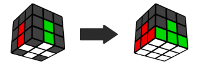
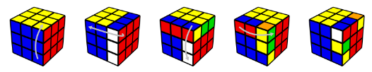
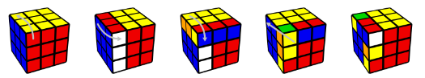
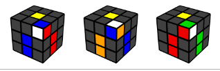
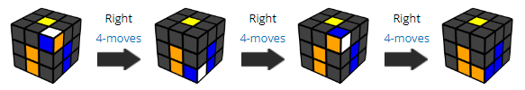

First layer

Hold the white cross on the bottom.
Before solving anything, do this 4-move sequence repeatedly until you have it memorized. It will be very important later on!
Right handed 4-moves:

Left handed 4-moves:

You can watch the tutorial video above to see the best way to do these moves quickly.
Now we'll use the 4-moves to solve the first layer.
With the cross on the bottom, find a corner piece in the top layer with white on it. Turn the top layer so the surrounding centers match the colors on the corner.
Note: A corner piece has 3 colors on it.

Hold the cube so the corner piece is on the front/right, and repeat the right handed 4-moves until this corner is solved.

You can also use the left 4-moves if you hold the piece on the front/left to start.
Repeat until all of the first layer corners are solved. If find a white corner incorrectly stuck in the bottom layer, you can bring it into the top layer by holding it on the front/right and doing the right 4-moves. The tutorial video above shows an example of this.